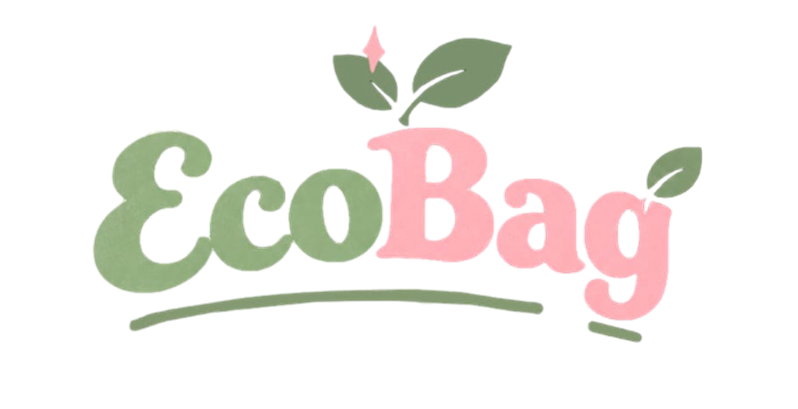
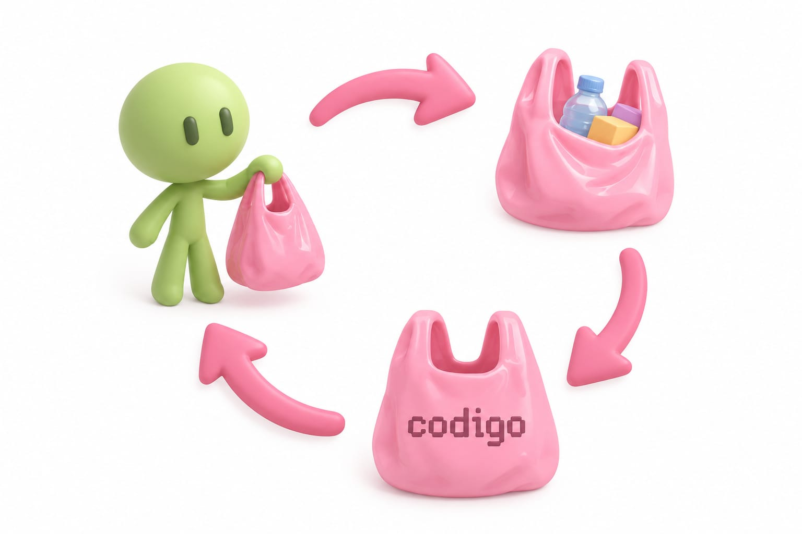

De fécula de maíz, glicerina y vinagre.
Inicia sesión en la página, entra a tu jardín, da clic en "Canjear Código" y escribe el código que viene en la etiqueta o caja de tu bolsa.
Escríbenos con tu código y una foto de la etiqueta, y lo revisamos.
Contáctanos desde Servicio al Cliente y acordamos tu pedido directamente con el equipo.
Vendemos en nuestro punto de venta en Celaya, Guanajuato, y en bazares y ferias locales.
En EcoBag nos esforzamos por mantener la calidad y la presentación de nuestro producto. Cada lote se elabora con un proceso definido y se revisa antes de llegar a tus manos, para que tu bolsa luzca bien y cumpla su función.
| Característica | EcoBag | Bolsa de plástico convencional |
|---|---|---|
| Material | Fécula de maíz, glicerina y vinagre | Plástico derivado del petróleo |
| Origen | Materia prima vegetal y renovable | Recurso fósil no renovable |
| Degradación | Estudios sobre bioplásticos de almidón reportan hasta 48.7% en 15 días | Puede tardar cientos de años en degradarse |
| Uso | Bolsa para cargas ligeras del día a día | Bolsa de uso común |
| Empaque | Biodegradable | Normalmente de plástico |
| Valor agregado | Código para desbloquear mascotas virtuales | Ninguno |
Úsala fácilmente como una bolsa normal en tu día a día.
